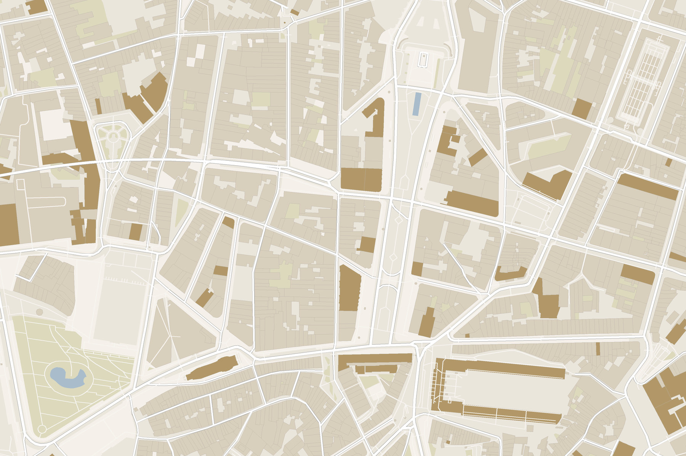
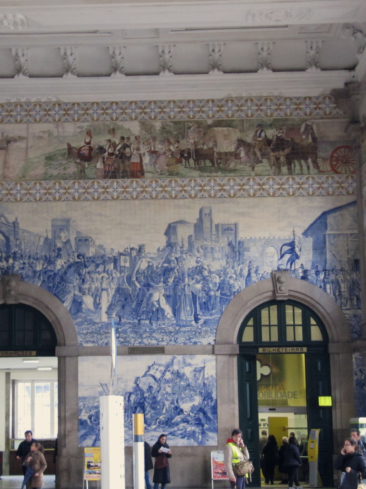
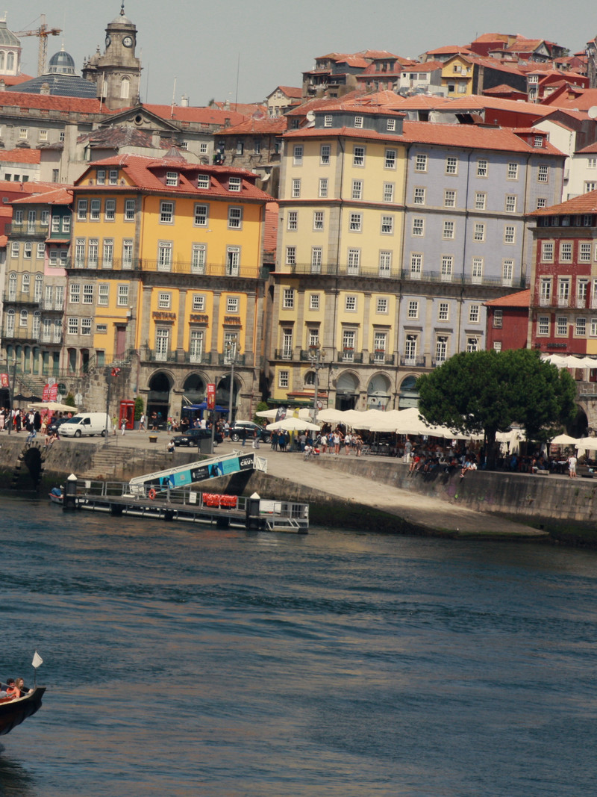

O apartamento
- 42m²
- 2pessoas
- 1quarto
- 1casa de banho
Um espaço amplo e único, com as camas, uma poltrona, a mesa de jantar e a kitchenette.
As duas camas são individuais e podem ficar juntas ou separadas.
O que tem
- Ar condicionado
- Wi-Fi gratuito
- Kitchenette
- Máquina de café
- Frigorífico e micro-ondas
- Televisão
- Secador de cabelo
- Elevador no edifício
Horários e regras
- Check-in
- 16:00 – 00:30
- Check-out
- Até às 11:00
- Silêncio
- 23:00 – 07:00
- Fumar
- Não
- Festas
- Não
- Animais
- Não
Do anúncio no Booking (novembro de 2026), a confirmar.
Localização
No centro do Porto, entre a Avenida dos Aliados e os Clérigos.

Rua do AlmadaRua FormosaRua dos ClérigosRua de Passos ManuelRua Doutor Ferreira da SilvaRua de José FalcãoRua de Trás MAliadosIgreja e Torre dos ClérigosEstação de São BentoMercado do BolhãoTeatro Municipal Rivoli Apartamento 1D, Almarela 200 mRua do Almada, 146, 1.º Dto4050-037 Porto
Como chegar 5min
5minLivraria Lello
A escadaria e o vitral

5minEstação de São Bento
O átrio de azulejos
 5min
5minTorre dos Clérigos
A vista sobre a cidade
 9min
9minSé do Porto
O terreiro e o claustro

12minRibeira
O cais e as esplanadas

Apartamento 1D, Almarela 16 fotografias